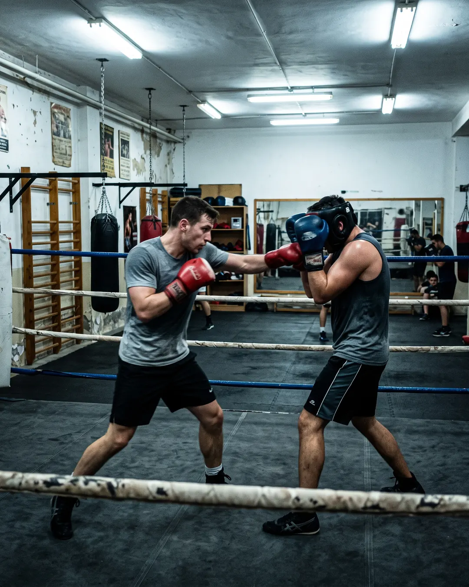

Caso n.º 7 · Gente peleándose
Sobre este caso
El caso n.º 7 está cerrado. Fue el caso diario del 7 de noviembre de 2026 y su tema fue Gente peleándose. Los detectives de aquel día tuvieron dos retos: cinco imágenes que clasificar en fotografías reales y generadas por IA, y cinco afirmaciones de una frase que clasificar en datos y bulos.
- Imágenes generadas por IA: 1 de 5
- Bulos: 2 de 5
Aquí tienes todas las respuestas. Cada imagen generada por IA trae el prompt que la creó, y cada afirmación, la verdad que hay detrás y los detalles que merece la pena recordar, para que compruebes qué se te escapó.
Uno de los bulos: «El récord mundial de puñetazos en un minuto es de más de 1.000.» La verdad: Los récords registrados rondan los 450 puñetazos por minuto.
¿Quieres afinar la vista? Lee nuestra guía para detectar imágenes de IA o nuestra guía para detectar un bulo y luego juega el caso de hoy.
Imágenes
-
Imagen 1

IA
La confesión del sospechoso
Dos boxeadores aficionados entrenando en un gimnasio de barrio, uno lanzando un golpe y el otro cubriéndose con guantes; luz de fluorescentes.
-
Imagen 2
REAL
Fotografía real
-
Imagen 3

REAL
Fotografía real
-
Imagen 4

REAL
Fotografía real
-
Imagen 5

REAL
Fotografía real
¿Dato o Bulo?
-
Afirmación 1
BULO «El récord mundial de puñetazos en un minuto es de más de 1.000.»
Los récords registrados rondan los 450 puñetazos por minuto.
- Son unos 8 por segundo.
-
Afirmación 2
BULO «El boxeo siempre ha tenido asaltos de 3 minutos.»
Los asaltos de 3 minutos llegaron con las reglas del marqués de Queensberry, en 1867.
- Con las primeras reglas, un asalto terminaba cuando un púgil caía al suelo.
-
Afirmación 3
DATO «En un combate de MMA, un luchador pesaba más de 170 kg más que su rival.»
Ocurrió en la empresa japonesa Pride, entre Emmanuel Yarbrough (unos 272 kg) y Daiju Takase (unos 95 kg).
-
Afirmación 4
DATO «El combate de boxeo más largo de la historia duró más de 100 asaltos.»
Fue en 1893 entre Andy Bowen y Jack Burke: 110 asaltos y 7 horas y 19 minutos.
- Acabó sin vencedor porque ninguno de los dos podía seguir.
-
Afirmación 5
DATO «El boxeo se practicaba hace más de 5.000 años.»
Hay relieves sumerios de Mesopotamia de hacia el año 3000 a. C. que muestran combates de boxeo.